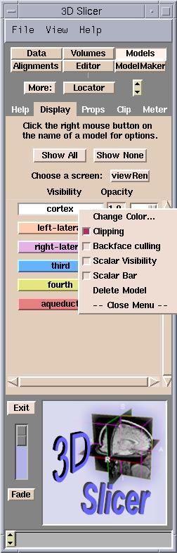
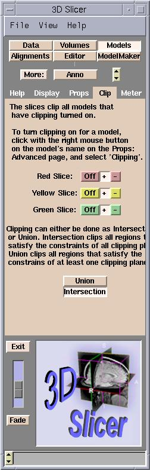
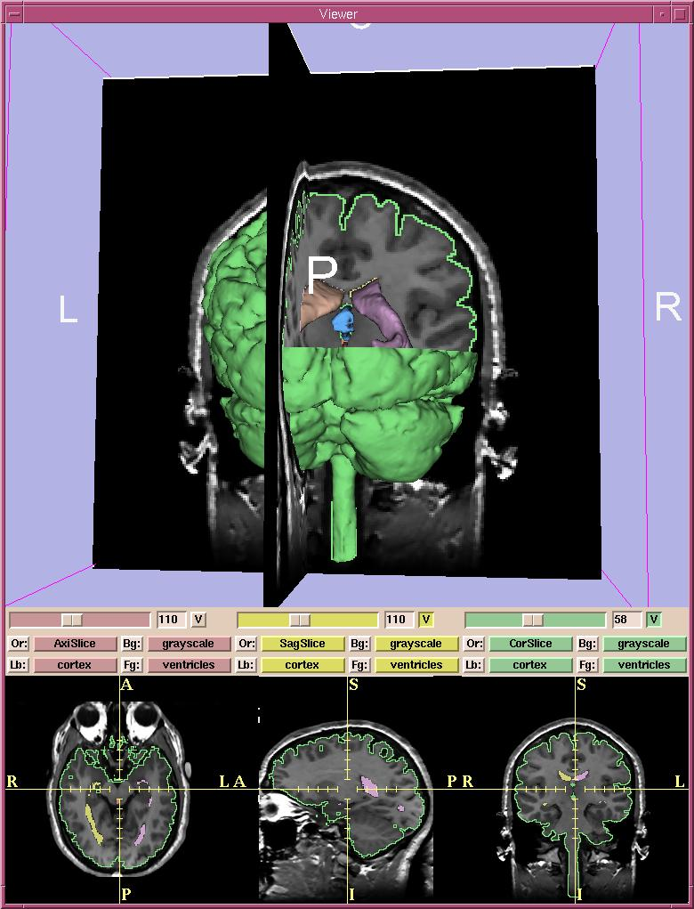

Clipping is cutting away sections of a model at one or more selected slices. On one side of each selected slice, the model is removed, revealing the image of each selected slice and the rest of the visible model.
To turn clipping on:

To control clipping:

| Color | Slice | + means: | - means: |
| red | Axial slices | Superior | Inferior |
| yellow | Sagittal slices | Right | Left |
| green | Coronal slices | Posterior | Anterior |
In the sample below, the right-superior-posterior part of the cortical surface has been clipped.
